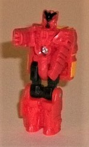 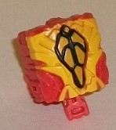
Difficulty of Transformation : Very Easy
Individual Rating : 4.4
Allegiances
: Decepticon
Size
: Titan ($160 U.S.)
Color Scheme
: Black, pumpkin orange,
red, "cheesy" orangish yellow, and some gray, silver, metallic gunmetal
gray, and dull metallic gold
Overall Rating
: 6.8
 Onyx
Prime
Onyx
Prime
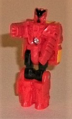
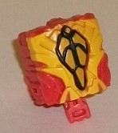
Difficulty of Transformation
: Very
Easy
Individual Rating
: 4.4
Onyx Prime is the rather
unexpected addition to this set, and he's exclusive to this set to boot--
you can't complete all of the Primes without him! Of course, since he's
just a (very) small part of the set, he fits the Predacon color scheme
by default, being mostly orange plastic with some black plastic on the
upper legs in his robot mode. As you'd expect from Onyx Prime-- essentially
the "beast" Prime-- he's got some rather angular organic details (or at
least as organic as they could be while still fitting into the Prime/Titan
Master dimensions). The chest has what looks like an almost demonic-looking
beast head on it, with fangs on top of the screw in the abs, which is surrounded
by mouth details. The arms are molded to look like the hands have claws
on them, and the lower leg details have angular kneecaps that taper down
to relatively small ankles with circular feet. The facesculpt is a bit
hard to decipher, at least at this scale, but it seems to at least partially
take some details from the "Aligned" universe Onyx Prime, who was a centaur
with a very evil, beast-like face. He's got two evil-looking eyes, and
a sloping forehead that seems to directly transition into a weird mouth
(or faceplate, it's hard to tell) at the bottom. There's only black paint
on the center of the head in this mode, so it's not like they make it easy
to figure out how all these details fit together, exactly. As with all
Prime Masters, in this mode Alchemist Prime can move at the neck, as well
as back-and-forth at the shoulders, hips, and knees (the latter two as
one for both legs, since the legs are molded together).
In Prime Core mode,
Onyx Prime's front has several jagged, angular details painted yellow that
look a lot like Onyx Prime's decorative antlers on his aforementioned "Aligned"
art, while in the center there's a symbol that looks like some streamlined
abs, surrounded with black to bring out the details and painted bronze.
It certainly gives off a definite aura of "strength", with the surrounding
details making it all more beastly. Since pretty much the rest of the toy
is orange, there isn't abrupt color changes behind the front of the Prime
Core, so it generally looks good from the side as well.
 Divebomb
Divebomb
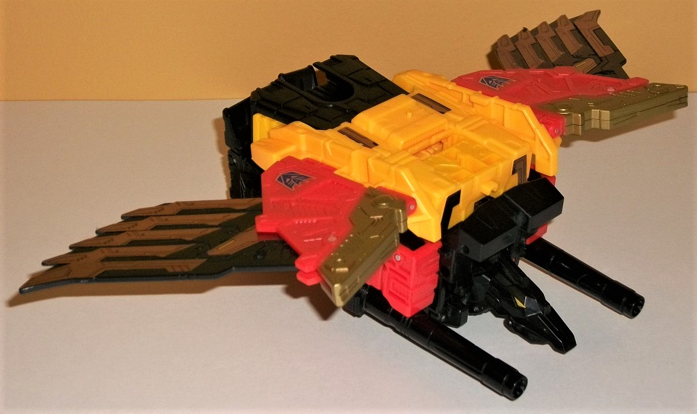
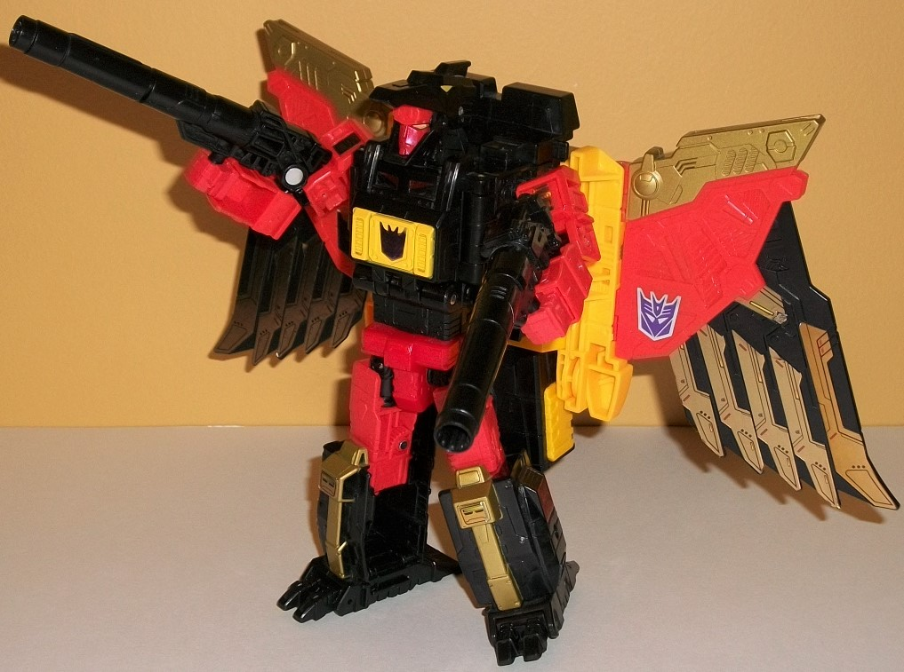
Difficulty of Transformation
: Very
Easy
Individual Rating
: 6.5
Divebomb is a mechanical
condor, and out of all the Predacons he contributes the most to the combined
mode-- which is why as an individual component, he's got a lot of... stuff...
he has to work with. Basically, there's two different ways you can display
his condor mode-- either "in flight" (as pictured above), or standing up
straight on his little bird legs. There's problems with both. As you can
see with the pic above, if you have him flying, there is an absolutely
ginormous, ridiculous backpack on the toy that puts his bird head waaaaaay
too low on the body. The backpack looks like it was designed for a bird
at least twice his size-- which, given that the backpack mostly forms the
wings and lower torso of the combined mode, makes sense in that respect.
(The tailfeathers look particularly oversized, given that they make the
anchoring point for the entire pelvis of the combined form.) However, having
that much stuff above Divebomb's bird head looks pretty weird, to be blunt.
If you stand Divebomb up on his bird legs, the backpack doesn't look as
enormous, but on the other hand it's very obvious you're just a few steps
away from his robot mode (especially if you open up his beak and see his
robot head inside it). The bird legs are too bulky and long to be anything
but obviously his robot legs folded up, and it's just too tall body-wise
for a bird mode. The robot arms are also rather obviously folded up on
the sides of the body, though this can be mitigated from a frontal view
if you peg in Divebomb's two long cannons into his sides in this mode.
Divebomb's mold detailing is one of the more impressive of the Predacons,
with mecahnical vents and armor paneling all over the place on his main
body, some robotic segmented details on the legs and feet, and a no-nonsense,
angular look to his bird head (though given the way the jaw is hinged,
it looks almost like a Muppet head). The wings are where the mold detialing
is at its finest, with vents and what look like the inner portions of feathers
detailed on the middle segments, with armor bolted on the top (and painted
gold) and his outer wings molded to look like they're made of several overlapping
plates. Divebomb is by far the biggest "sticker hog" in the set because
of these wings, with every outer feather getting at least 2 stickers, front
and back. It looks quite nice, but man, you better line up all those stickers
JUST right or it'll be obvious one is off-- I wish they were just paint,
they're a pain to get right. Beyond all those wing stickers, he also has
one Decepticon symbol on his chest and four for his wings (one on each
side of each), along with a few minor mechanical detail stickers for his
upper chest, knees, sides of his lower legs, and on his back and upper
back. Divebomb's color scheme overall is more black if you've got him standing
up, but more yellow if you have him flying, given how much of his backpack
is the latter color. There is some orange on his middle wings, though,
and also some yellow paint on his chest to break up all the black there.
Some gold is also used, on the top of his wings, on his eyes, and on the
front of his legs. Overall, except for a bit too much black on the upper
portion of the bird body, and a bit too much yellow on his back, his colors
are broken up pretty well, here. For articulation in this mode, Divebomb
can move at the wings (at two points), at the neck, at the jaw (though
again, if you open it, you'll see the robot face inside), waist rotation,
and movement at the hips (at three points) and downwards movement at the
feet. Of worth noting is that he does have one little peg on top of his
back in this mode, on which you can stand a Prime/Titan Master in their
robot mode-- it's slightly to the left of the center of his back.
The transformation to
Divebomb's robot mode is incredibly simple, especially for such a large
toy-- just open up the bird beak to expose the head, unfold the arms from
the sides of the main body, and then extend down the legs to make them
more properly robot-proportioned. That's it-- thus, many of my comments
about the robot mode are generally the same as for the bird mode. He's
still got a ridiculously huge backpack, the same chest, the same lower
legs as the bird legs, and even mostly the same head, though now the bird
head "frames" a rather normal red face with a blocky forehead and painted
gold eyes. What little extra is revealed in the color scheme is a bit more
orange on the arms and upper legs, with some simplistic blocky robotic
mold detailing on each. There's also some more gold foil stickers on the
upper arms, each having small simple mechanical details on them. The body
still looks a bit too square and a titch too long proportionally, but overall
the body's certainly more proportional for a robot than a bird. Divebomb
can hold his cannons in his hands in this mode, though it should be noted
that each cannon is actually made of two parts for some reason, with the
barrel split into two pieces, and they can come untabbed from each other
a bit annoyingly easily. For articulation in this mode, Divebomb retains
the same wing movement, as well as movement at the neck, shoulders, elbows
(at two points), inwards at the wrists, and rotation at the waist, movement
at the hips (at three points), knees, and downwards motion at the hips.
Because of his long back heels, he's more stable than you'd think in this
mode.
 Headstrong
Headstrong
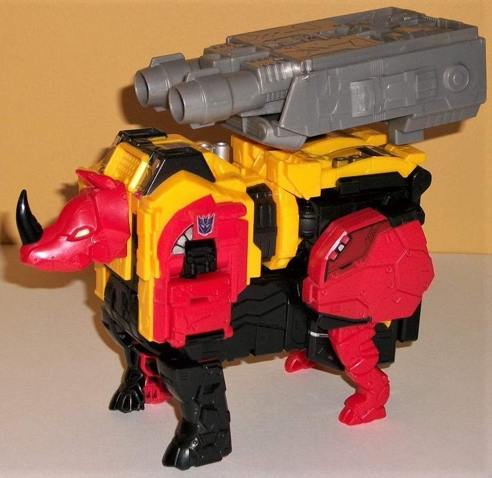
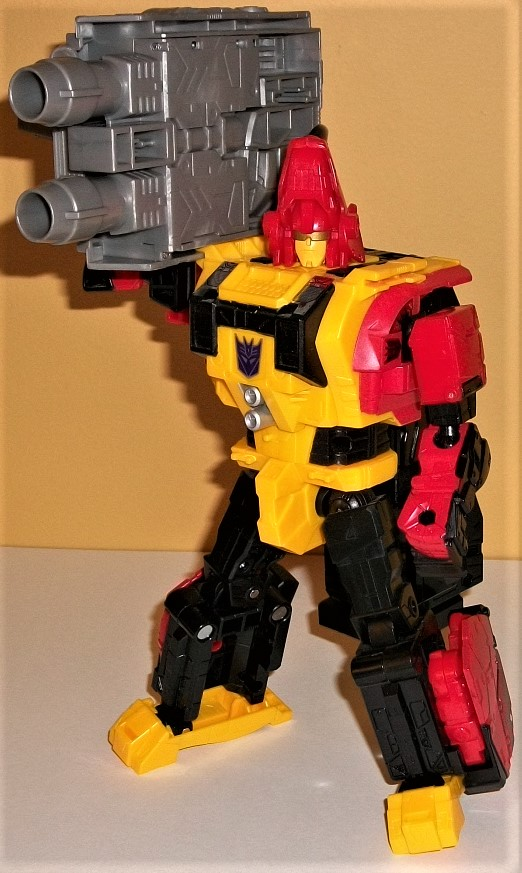
Difficulty of Transformation
: Easy
Individual Rating
: 6.0
Headstrong is a robotic
rhinoceros, and man, in beast mode this guy is a CHUNK. Most of the other
Predacons are roughly voyager-sized, but him and Torox-- if you include
their massive guns-- are about Leader-class (maybe SLIGHTLY smaller), at
least in terms of mass. Unfortunately, when looking at Headstrong's beast
mode, it's pretty apparent (assuming he's not against a black background)
what the main issue here is, and that's that he's got a HUGE block of black
plastic making his stomach definitely closer to the ground than it should
be-- this becomes the entire upper combiner leg and part of the hip, so
it makes sense that it's big, but I sure wish they could have broken it
up and had it mesh with Headstrong's beast mode better. With Headstrong's
main body already a bit long in the front and most definitely pretty rectangular
and blocky for a rhino, he just looks too stiff. His head, though well-sculpted
with some molded-in bolts around the jaw, is a bit small considering the
size of the body, which is another negative. The mold detailing on the
rest of Headstrong is above-average for the team, with plenty of plate
and bolt detailing all over the place, particularly on the rhino legs.
There's still plenty of robotic panels and vents on the top, though, making
Headstrong have mold detailing that makes him look sturdy enough to match
his beefy proportions. The front legs look about right proportionally,
but although the hind legs look good from the knees up, from the knees
down they look a bit too skinny. It's not a HUGE issue, but it is noticeable.
Headstrong also has no tail-- not a big deal for a rhino considering their
tails are small anyways, but still worth noting. The color breakup for
Headstrong is primarily yellow on the main body, with his limbs and head
red and the rest of his body and some details black. There isn't any orange
on him whatsoever, but given he's got all the major other colors of the
Predacons, he still fits in with them all quite well, and all of his colors
are broken up quite well with paint apps and foil stickers to keep any
one section from looking too "one-tone". There's some gold paint on the
top rear of the toy, as well as some black paint on the top front, the
middle of the body, and the horn. His eyes are yellow, and there's quite
a bit of red paint on the upper legs (as well as some on his lower legs
which highlight his robot arm detailing, which can make them slightly obvious
in this mode). There's also just a titch of silver paint on the top of
the body, as well. Headstrong has quite a few foil stickers-- two Decepticon
symbols for his shoulders; more bolt detailing on said shoulders; large
red stickers for his hind legs; and some generic robotic detailing stickers
on the top rear and the top front of this mode. Thankfully, only the front
bolt-panel stickers are near a point of articulation, so there isn't much
peeling of the stickers. Headstrong's articulation is sadly pretty bad,
especially for a toy of this size-- he can rotate at the neck and the knees,
but his legs can only move slightly outwards at the shoulders, and his
hips are pretty frozen in place. His rear ankles and knees can move back-and-forth
a bit, but that's it-- Headstrong's a pretty big brick in this mode. I
really wish his front legs could move forward, or that he had jaw articulation.
Headstrong does have one peg on the top of this mode-- in the small section
that becomes the robot mode waist-- where you can plug in a standing Titan/Prime
Master to "ride" him. You can also put on Headstrong a GIGANTIC dual-barreled
gun that becomes Predaking's foot (and which also has one of Predaking's
fists slid into it). Due to the manner in which it's attached, there's
a connector piece that sticks out one side in an asymmetrical fashion which
doesn't look that great, even though giving such a chunk this big of a
weapon is otherwise neat. The weapon piece itself is almost entirely gray
(with one silver foil sticker near the front), so it's pretty one-tone,
but the mold detailing on it is fairly good, with a decent number of panels,
tubes, and the like on it (particularly on the side that faces up for foot
mode).
Headstrong's transformation
is pretty simple, especially for such a large toy. The head rotates upside
down, and the front legs fold out and up to become the robot arms; pretty
simple. The only slightly complicated part is that the upper back rotates
down to become the lower legs and feet, while the large hip piece rotates
down to become the outer side of the lower legs (with the rhino leg folded
in). The end result still means that Headstrong has a huge black leg piece
as kibble, only now it's on his back as opposed to his stomach. Because
of the way his arms transform, his shoulders also don't seem "buff" enough
for such a large 'bot-- it seems like part of his robot mode around there
could slide outwards a bit to give him more substantial mass there. As
mentioned before, his arms are just molded into his lower legs, but they
still generally look good and proportional in this mode. The robot head
is molded onto the underside of the rhino head, and the "core" head itself
looks pretty typical for a TF, with square chin guards and a forehead crest,
with a gold visor and a yellow face with a large gun. Having the entire
rhino head on the back admittedly does look a bit odd, but that's just
following the G1 toy's head aesthetic, do I don't mind it that much here.
The main body stays the same here, so the details from the rhino back pretty
much just carry over to the robot chest and torso, and the color breakup
is largely the same, though perhaps with a BIT more black. The legs are
generally pretty well-done and proportional, with the exception being that
those red rhino hip sections are bit TOO large on the sides of the legs,
extending back beyond where the heels should logically be. The interior
of the legs is visibly hollow as well, which doesn't look that great on
a toy of this size. Still, the new construction allows Headstrong to thankfully
be much more articulate in this mode, with movement at the neck, shoulders
(at three points), elbows, hips (at three points), knees, and ankle tilts.
He also technically has waist rotation, but you have to lift up that big
combiner leg on his back for him to actually have enough room to rotate
there. Headstrong can still carry his huge foot-gun in this mode, on one
of his shoulders-- there's actually a slot for it to slide in on his shoulders
which allows him to hold it quite steadily like a giant boombox; putting
one of his hands up to the gun isn't actually necessary at all for him
to hold it, it just helps to complete the "illusion" he's carrying it.
With his long feet, he's still pretty stable. It looks a bit more cumbersome
in this mode, but I like that the huge weapon is still able to be solidly
carried.
 Rampage
Rampage
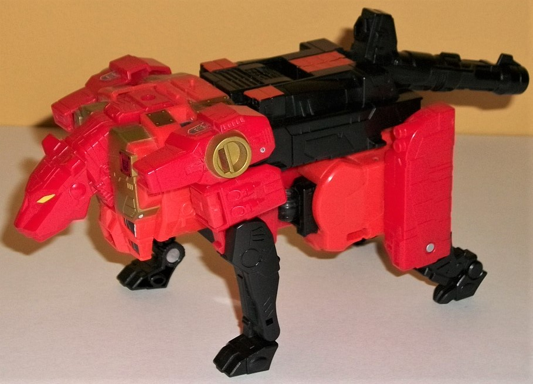
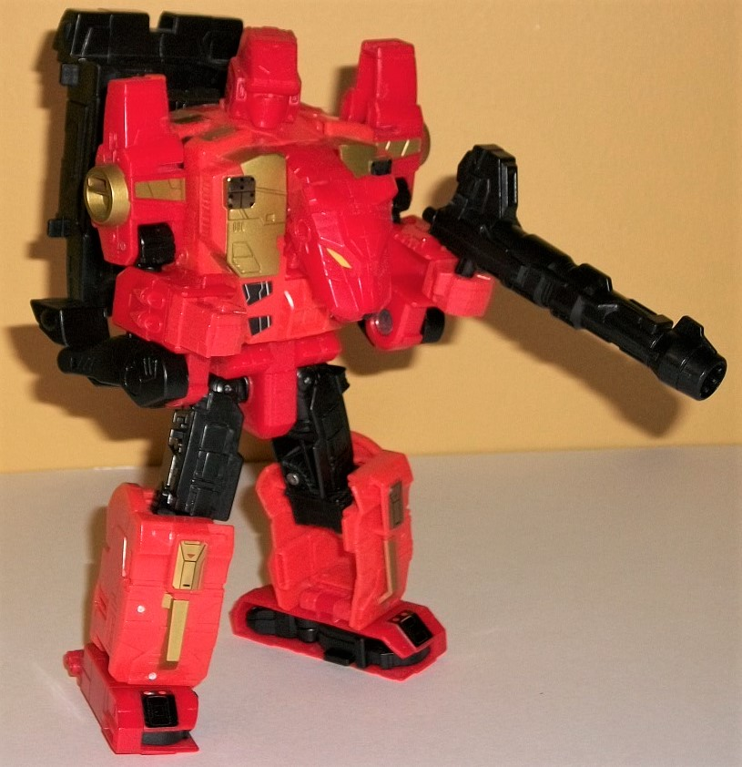
Difficulty of Transformation
: Medium
Individual Rating
: 7.6
Rampage is a robotic
tiger-- and like most of others in this set, has a bit of a chunky alt
mode, even when you consider it's robotic and thus not necessarily a 1-to-1
correlation to the "real thing" is required. The front looks absolutely
stellar-- there's the tiger head and front that becomes the robot chest,
with fairly proportionate front legs that are a bit bulkier up top and
skinnier down below. The mold detailing is also quite good on this portion
of the figure, with all kinds of panels and detail lines all over the toy,
especially on the head and chest, with even some circuitry visible on the
sides of the neck (of course, much of this is not painted). The back two-thirds
or so of this mode, however, is a bit weak. The combined mode shoulder
forms much of the upper back, which is fine, but the robot waist and legs
very obviously stick out below that portion, and definitely stick further
down than you'd expect for a tiger, making Rampage look fat. His rear legs
look incredibly weak, as they mostly just consist of the pieces that become
the robot feet turned sideways, thus looking far too long and "stiff" for
the toy, with minimal detail. Small black rear feet fold down from under
them, but they're too small compared to those large straight feet and don't
look good-- plus, the upper portion of these rear legs is locked in because
of the transformation, so he can't even move those parts to make his legs
look more dynamic in this mode. His gun forms a decent tail, even if it's
blatantly obvious it's a gun. The mold detailing on the back end is also
markedly simpler, with some more general, vague panel lines, for the most
part, with a few gun-like pods on his hips but otherwise not as much detailing
as I'd expect on a Generations toy of this size. It's also a bit obvious
that the top of the figure behind the tiger head is the back of Rampage's
robot head, but color-wise it fits in with the tiger head, so I don't mind
it much. The color scheme on Rampage aims more towards the red end of the
spectrum, with red used on his heads and upper legs, while black is used
on his lower legs, much of his back, and his gun in this mode, with a bit
visible on the stomach. Orange forms much of the rest, at least in terms
of plastic. There is some nice dull gold paint on the front of this mode
(on what becomes the robot chest), as well as on circular details on his
shoulders, and there's some yellow on his tiger eyes, black on his nose,
and some orange on some parts of his lower back. He has quite a few foil
stickers, though most of them are thankfully small and not particularly
obnoxious-looking-- Decepticon symbols on the top of his shoulders; gold
"armor plates" on the top of his upper back; more gold plates (and another
Decepticon symbol) on the pecs of what become his robot chest; and some
black circuitry stickers on what becomes his robot abs. The gold plates
on the top can peel a bit since they're next to shoulder joints, but otherwise
the stickers stay on pretty well. There is one port for a Prime/Titan Master
to stand on in this mode, and it's behind the flipped-down robot head on
the upper back, slightly to the right of center. For articulation in this
mode, Rampage can move at the jaw, neck, shoulders (at two points), front
knees (though only backwards), front ankles, rear knees, and rear ankles.
However, nearly all of this articulation is in just one plane, making it
considerably more limited than it seems from a brief description. Beyond
the front legs, he's not all that poseable.
To transform Rampage
to robot mode, you fold down his lower body from the tiger stomach, fold
down the robot legs and fold in the tiger rear legs to form the feet; pop
up the robot head from the top; unfold the robot arms from the tiger shoulders
and fold the lower legs behind the lower robot arms; and then fold down
and rotate the combined shoulder piece behind his back. The end result
is one of the better individual robot modes of the Predacons, but there's
still definitely some problems with it. For one, that whole shoulder piece
just kinda sticks out behind his back rather obviously; I mean, it doesn't
even fold up against it, there's a bit of the combined shoulder between
the back of Rampage's actual back and the beginning of this shoulder piece.
From a side view it looks bad, though from a more frontal view it doesn't
stick out TOO much. On a lesser note, the front tiger legs are rather blatantly
hanging off the bottom of the lower robot arms, though at least those joints
are stiff and not floppy, so they stay where you put them. The proportions
of the main robot are slightly off; I can't decide if his hands or his
legs are a bit too short. Maybe a bit of both, but his body seems slightly
oversized overall. Ignoring that, the vents and generic detailing on the
legs and arms is decent-- though not outright impressive-- and there's
been some foil stickers added to the legs that weren't visible in beast
mode; some details on each knee and on the front of each foot. The tiger
head does stick out a bit from the front, but this is sort of Rampage's
thing (along with the other Predacons having obvious animal heads in robot
mode), so this is Hasbro just sticking with the source, here, and it's
not that big an extra, anyways-- not any worse than many Beast Wars toys.
I do love the black abs and gold chest, as they look like what a tiger's
chest would be color-wise if it was humanoid. Rampage's head is one of
the least human of the group, with a long forehead "cap", large round "earmuffs",
and a large red faceplate, with a slim strip showing two eyes being the
only more "human" part of his head. I wish his eyes weren't painted black,
though, that just looks odd, like he's dead or something. Use yellow or
gold instead. With the shoulder portion being (mostly) out of the way in
this mode, and only the upper legs revealing more black, in general this
mode aims more towards the red than the tiger mode, with red now more obvious
on the arms, with some additional orange on the lower legs and hands to
boot. His colors are still broken up pretty well in this mode, so no real
issues there. For articulation here, Rampage can move at the neck, shoulders
(at two points), elbows (at two points), inwards at the wrists, rotation
at the waist, and movement at the hips (at three points), knees, and slight
tilting at the ankles; thus, given his wide feet, he's pretty articulated
and poseable in this mode.
 Razorclaw
Razorclaw
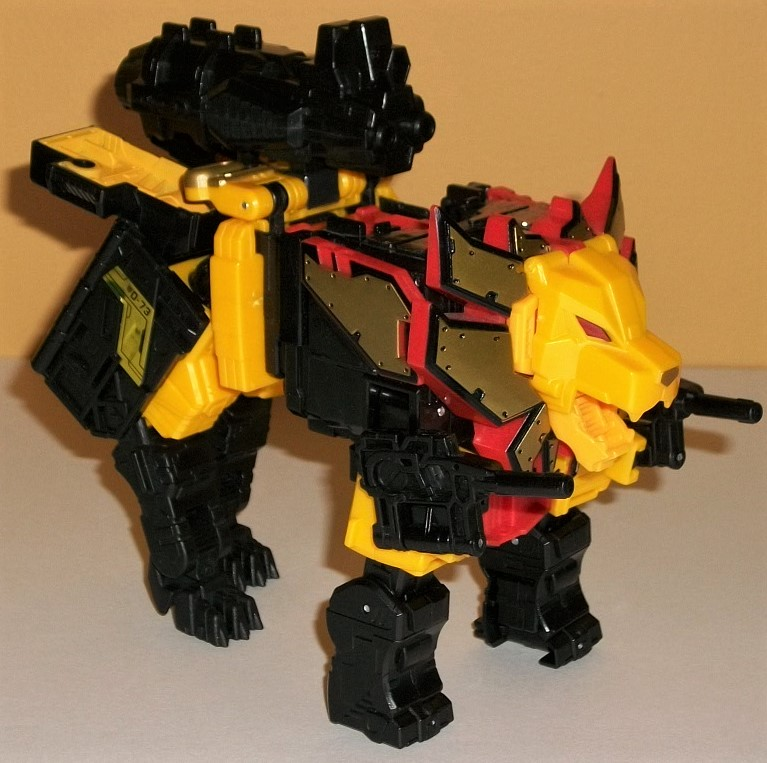
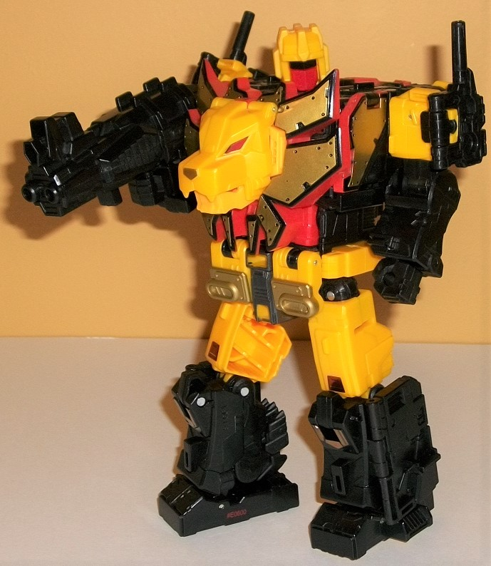
Difficulty of Transformation
: Medium
Individual Rating
: 7.8
Razorclaw's alternate
mode is a lion, though like the others in this set he's pretty mechanical,
with mostly very straight, blocky edges, and doesn't look remotely organic
or streamlined-- sometimes to his detriment. His beast mode doesn't really
have any sort of "natural" stance, as the legs are too close to straight-down
and it almost looks like he's "stretching" himself up to make himself look
taller than he actually is. Interestingly, even though Razorclaw actually
SHOULD have a BIT of a stomach because of how bulky lions can be, he's
quite skinny around the mid-section, which perhaps adds to this "stiff"
look. Like the other Predacons, he does have some kibble in this mode,
the most obnoxious of which are his feet panels above his butt. They're
painted yellow to, er, "blend in", but it doesn't help. At all. They're
pretty clearly feet, back there. On a lesser note, some of the Predaking
chest parts are a tad obvious, like the lower chest bit between his front
two legs, the back of the gestalt head making up the toy's upper back,
and the "extra mane" parts on the sides of the front body. The last two
are pretty minor, however, as the Predaking head stays out of the way and
is covered up pretty well beyond the back, and the extra mane pieces can
just be seen as the mane "extending" past the front. Razorclaw doesn't
really have a tail in this mode, though in its place he has a large, triple-barrage
gun mounted there, which looks like it could obliterate some Autobots pretty
quickly. The mold detailing on this toy is generally the opposite of Rampage's--
on the FRONT end it's a bit less detailed than most other Generations toys,
with only some very basic details on places like the lower legs (though
some places like the wonderfully-sculpted face and side guns are detailed
pretty well). Meanwhile, the back end has lots of technical details like
vents, panels, and the like all over the place, especially on the upper
legs. Razorclaw's color scheme is mostly black and yellow, with the yellow
being more prevalent on the head, upper front legs, and rear section. The
mane parts are orange plastic, along with the back of Predaking's head,
but they're more of the exception here. There's some great gold paint on
his mane pieces that is outlined with black paint, which looks marvelous.
There's also some gold paint on his nose and on some parts on his lower
back. Beyond that, though, there really isn't any other paint visible in
this mode, but there ARE some foil gold stickers with some basic technical
details, like the "bolted panel" detail stickers on the top of his upper
back, and some basic detail stickers on his hind legs. For articulation
in this mode, Razorclaw can move at the mouth, shoulders (at two points--
neither of them forward, unfortunately), front knees (at two points), at
the base of each leg-gun (at two points), and at his hips (at two points),
rear knees, and rear ankles. I really wish those front legs could move
forward, but otherwise he's decently articulated in this mode. He has one
port on the top/back of Predaking's folded-down head for a Prime or Titan
Master to stand on in this mode. Oh, and one last thing before I move on--
lifting up the Razorclaw head reveals a yellow Matrix handle and a cavity
where you can implant Onyx Prime (or another Prime Master) into what becomes
Predaking's chest. A pretty nice extra little feature to help Predaking
fit into the PotP line.
To transform Razorclaw
into his robot mode, fold up and back the lion head, which reveals the
robot head; rotate out the front legs and fold out the hands while rotating
the guns around a bit; then fold up his rear lion legs into all those panels
around his butt and close then around said lion legs to form his robot
feet. I really like they essentially got "rid" of the rear legs for this
mode, with the only really obvious lion part being, well, the big head
on his chest, but that's kind of a schtick among the Predacons, as I've
said. He has basically no kibble in this mode, but he pays for this with
a fairly large body and arms that are a bit too short. Granted, it's not
NEARLY as bad as on the
original G1 toy
,
but it's definitely noticeable-- Razorclaw looks a bit tubby, there's no
getting around it. The headsculpt looks pretty good, with a angular yellow
"helmet" with a center forehead crest and large side guards with "bumps"
for ears. His face has a black visor with a red faceplate, thus bearing
a bit of a resemblance to Predaking's face. There's a few more basic robotic
details here and there on the upper legs and feet, but nothing particularly
eye-grabbing-- because of his transformation, most of the details from
lion carry over to this mode. Because of the "revealed" upper 'bot legs,
though, there's some more yellow in the mix in this mode compared to beast
mode, with the black separated a bit more and the orange definitely a secondary
color. Beyond the aforementioned paint on his face, there's no other newly
visible paint apps on the body beyond some metallic gunmetal gray on his
crotch. There are a few foil stickers on his knees and the lower portion
of his upper legs, but they don't add much to the color scheme, as they're
fairly small. For articulation in this mode, Razorclaw can move at the
neck, shoulders (at three points), elbows (at two points), inwards at the
wrists, at the hips (at three points), knees, and ankles (at two points).
Thus, other than lacking some waist rotation (which is impossible given
his transformation), he's fairly poseable, keeping in mind his proportions.
 Torox
Torox
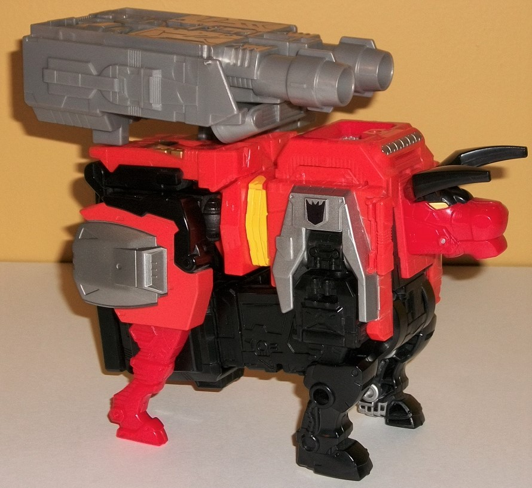
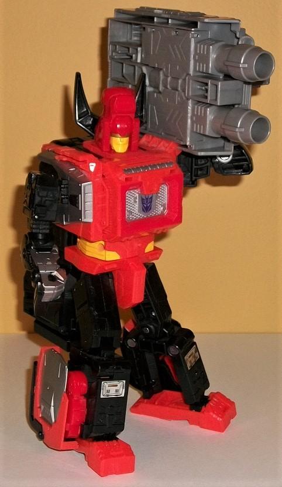
Difficulty of Transformation
: Easy
Individual Rating
: 6.1
I guess Hasbro wasn't
able to get Tantrum trademarked, so he's named Torox now. Anyways, although
he's a different mold from Headstrong, they both share pretty much the
exact same engineering, so many of my comments on Headstrong will apply
to Torox, too. For example, the biggest issue with the beast mode-- yep,
there's the big combimer upper leg portion underneath his entire bull body,
looking blatantly obvious unless he's up against a black background and
making him look even chunkier than he already is. He also has no tail--
though again, for a bull, that's not a big deal. The legs are a bit too
2-D for my liking and don't come out of the body as much, though the skinnier
lower rear legs work a bit better for a bull than a rhino. The actual "core"
body proportions aren't too bad, and the headsculpt is simplistic but still
pretty decent looking, with angled horns, yellow eyes, and a slightly angular
mouth that sadly can't open. There's a Soundwave chest-like detail on the
upper back, forming a big rectangle, with some grill detailing on it, along
with some vents molded on the side. His lower legs have some nice piston
and wire details on them, though much of the rest of the mold detailing
on the toy is rather generic armor paneling and ridges, not really calling
to mind anything beyond some minor decorative stuff. Torox's main color
by far is orange, though of course his upper leg piece is mostly black,
along with most of his front legs, the lower portion for his main body,
and his horns. There's some red only on the bull head, center of the robot
chest, and rear legs. The silver present is all paint, and is used on the
beast shoulders, on part of the rear legs, and on the middle and top of
what becomes the robot chest-- the upper back, here. There's a titch of
yellow on the waist (and on the combiner waist portion underneath him),
and a bit of gold on the lower back, but that's it. There are a few foil
stickers-- a Decepticon symbol for each shoulder (the symbol on his upper
back is painted), and a sticker for each portion of the lower back showing
off some generic silver detailing. For articulation in this mode, Torox
can rotate at the neck, move back at each of his four knees, and back-and-forth
a bit at each rear ankle. So just like Headstrong, not much movement in
this mode. For a weapon he carries the other massive foot-gun for Predaking
on his back, which can slot in on the top of the rear and has a flap of
plastic going off in the opposite direction of Headstrong's, given that
Torox forms the opposite foot and this piece is the ankle tilt for the
combiner. On the back, there is one port for a Prime/Titan master to stand
on, on the small "ab" portion in the middle.
The transformation for
Torox is the same as Headstrong's, which leads to a robot mode with largely
the same positives and negatives. There's still the big combiner upper
leg behind his entire body, and the large rear bull hips on his lower legs
go back a bit further than they should. The arms are a bit 2-D and the
hands and lower arms merely molded into the lower beast arm pieces and
painted silver, but it looks better than the red paint on the equivalent
parts on Headstrong, methinks. Most of the same mold details from beast
mode are again present, with only some very generic, minor robotic detailing
on the front of the legs. His headsculpt is also on the underside
of his beast head, with square sides, a smooth forehead, and a similar
"normal mouth/chin and indented visor" like Headstrong's face. The horns
coming way off the back end of his head look a bit ridiculous, though,
and overall he suffers more for having an entire beast head behind his
robot face than Headstrong does. There's two new foil stickers visible
in this mode-- more generic mechanical details on the lower legs-- but
that's it. For articulation in this mode, Torox can move at the neck, shoulders
(at three points), elbows, hips (at three points), knees, and tilting at
the ankles. Like with Headstrong, he can rotate at the waist, but the big
combiner piece on his back gets in the way of much rotation there. And
yes, just like with Headstrong, he can carry his large gun-foot weapon
like a boombox by slotting it into one of his shoulders.
 Predaking
(Combined Form)
Predaking
(Combined Form)
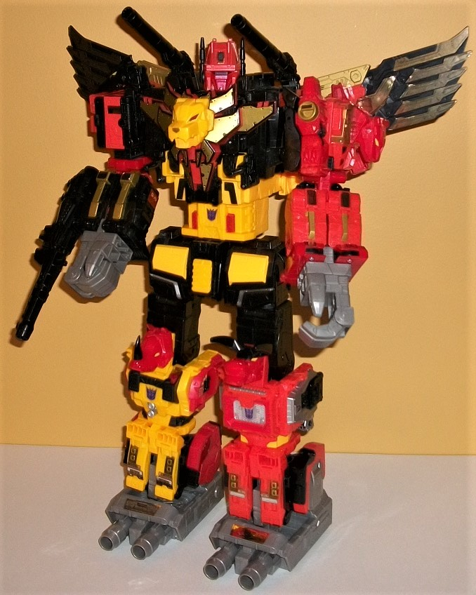
Difficulty of Transformation
: Very
Hard
Individual Rating
: 9.3
The combined form for
Predaking isn't like your typical 5-part combiner. Rampage forms the left
arm like normal, but Divebomb forms both the right arm AND the wing backback
AND a small portion of the lower body. Razorclaw forms most of the main
body and head. Torox and Headstrong each form an ENTIRE leg and foot, along
with part of the hip that slips into the middle waist section. The end
result is a remarkably well-proportioned combiner, and is definitely what
took the priority over anything else in this set. Although a titch thick
at the elbows, otherwise Divebomb and Rampage make decent arms, and the
hand pieces peg into the bottom of their feet quite securely. The guns
from Rampage & Razorclaw can be combined and pegged into the side of
the lower arm form to give Predaking some extra firepower-- unfortunately,
it can't be held in either of the hands, which is a major oversight. Divebomb's
wings form an excellent backdrop/silhouette to the upper body, though they're
small enough compared to the whole body it's hard to see Predaking actually
flying with those things. Razorclaw forms a very proportional, strong-looking
body, with the chest rather wide and slowly narrowing down to a trim waist.
The head is quite well-sculpted, with an orange helmet with a large forehead,
long black antennae, a red faceplate and chinguard, and a black visor.
It's accurate to the source material, though admittedly for someone named
"Predaking" I wish it looked fiercer/more beastly. The back end of Razorclaw's
lion mode-- his yellow robot feet in particular-- does stick out a bit
behind the head, making for Predaking's only rather obvious piece of kibble.
Divebomb's twin cannons make excellent shoulder cannons for Predaking here
as well. The waist looks good by itself, but is a bit oversized compared
to the waist. Torox and Headstrong make excellent legs, though the lower
legs are just a titch bulky (hence why the waist/hips need to be so large).
The large guns form great, solid feet, and have ankle tilts so you can
angle the feet a bit as well. Speaking of the total articulation, in this
mode, Predaking can move at the neck, at two points on each shoulder gun,
at two points on each wing, at the shoulders (at two points), elbows (at
two points), wrist rotation, at the knuckles (with all four fingers being
one piece), waist rotation, at the hips (at three points), knees, and then
the aforementioned ankle tilts. The overall color scheme of the Predacons
works together quite well overall, with the scheme being a bit asymmetrical
but still cohesive-- red, orange, yellow, and black are all scattered around
and used quite well throughout the entire toy, with no one section being
too much of one color-- even the black hips have some yellow and silver
details on them. Meanwhile, using gray for just the hands and feet works
pretty nicely. Also having the unifying "theme" being obvious animal heads
for each component-- the lion head on the chest, the tiger and condor heads
on the shoulders, the rhino & bull heads on the knees-- makes it look
like Predaking himself has been a bit of a hunter, and "decorated" himself
with the heads of his trophies, which I always thought was kind of a cool
look (heck, you could apply this to his wings, as well). Really, I don't
have much to say negative about this mode, other than I wish he had a sword,
and that it's pretty obvious the lower arms are formed from Divebomb and
Rampage's legs stuck together. Well, and that the mold detailing-- while
not BAD-- is a bit more simplistic than what I'm generally used to for
a combiner, especially one made of animals, but that applies to the individual
toys too.
No Stats
Overall, the Predaking
set is one of the weakest Titan-class sets. Oh, the combined form looks
absolutely amazing-- one of the best of any combiner, ever, much less a
Titan-class one-- but the individual robots largely suffer for the combined
mode, what with everything being integrated into them. Whether it's big
combiner upper legs sticking off the back of Torox and Headstrong, really
chunky bodies, big backpacks on Divebomb and-- to a much lesser extent--
Rampage, generally unimpressive mold detailing, and complexity that's rather
simple for the size, the individual components don't fit such a large pricepoint.
If you're planning on keeping him combined all the time, he's quite good,
but as far as looks and poseablity for the individual robots, they're (generally)
lacking.
Reviews by Beastbot